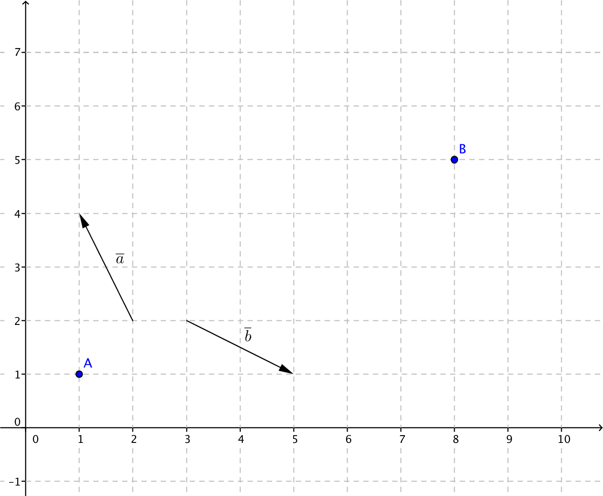
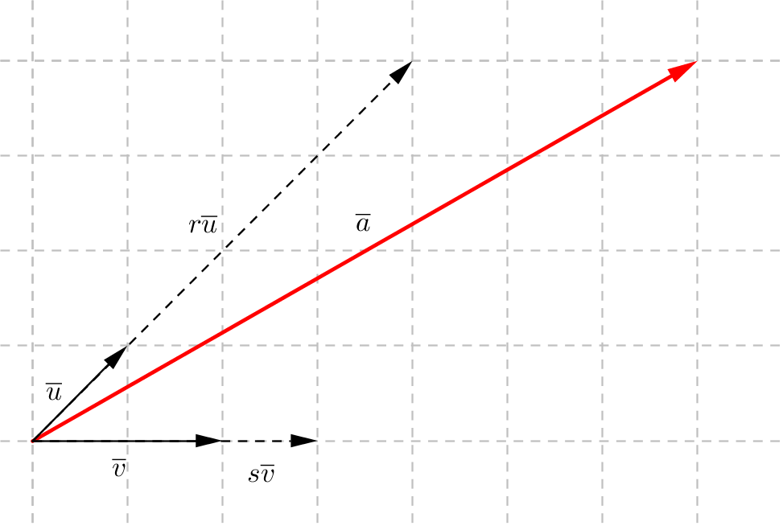
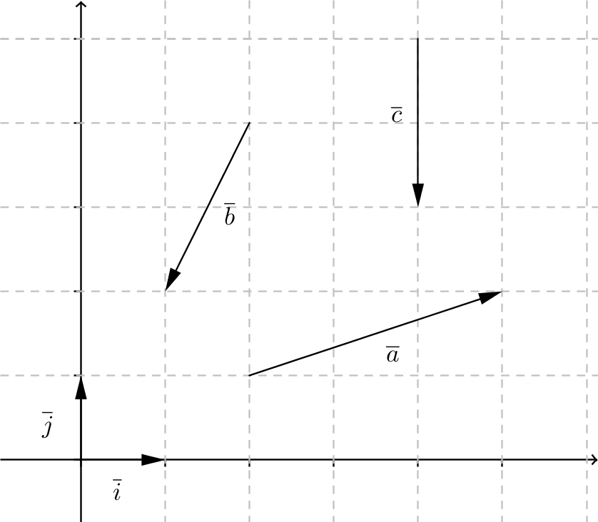

5. Vektorns komponenter
Hur många vektorer av \(\overline{a}\) och \(\overline{b}\) behövs för att vi kan flytta oss från \(A\) till \(B\)?

Exempel 1 Uttryck vektorn \(\overline{v}\) med hjälp av vektorerna \(\overline{a}\) och \(\overline{b}\).

En vektor \(\overline{a}\) kan uttryckas som komponenter av andra vektorer. Vi tar \(\overline{u}\not=\overline{0}\) och \(\overline{v}\not=\overline{0}\) som är olika riktade. Vektorn \(\overline{a}\) kan vi uttrycka som \(\overline{a} = r\overline{u} + s\overline{v}\), där \(r\) och \(s\) är reella tal.

Vi talar om att vektorn \(\overline{a}\) består av \(s\) st komponenter av \(\overline{u}\) och \(r\) st komponenter av \(\overline{v}\).
Har vi tre dimensioner behöver vi tre stycken vektorer som vi delar in \(\overline{a}\) i. Då får vi \(\overline{a} = r\overline{u} + s\overline{v} + t\overline{w}\), där \(\overline{u}\not=\overline{0}\), \(\overline{v}\not=\overline{0}\), \(\overline{w}\not=\overline{0}\) och olika riktade och \(r\), \(s\) och \(t\) är reella tal.

Exempel 2 För \(xy\)-planet har notationen med vektorerna \(\overline{i}\) och \(\overline{j}\) blivit standard. Uttryck vektorerna \(\overline{a}\) och \(\overline{b}\) med \(\overline{i}\) och \(\overline{j}\) som komponenter.

Då vi delar upp vektorer i komponenter utnyttjar vi entydigheten. Det betyder att en ekvation endast har en lösning.
Låt \(\overline{u}\not=\overline{0}\) och \(\overline{v}\not=\overline{0}\) vara olika riktade. Om \(r\overline{u}+s\overline{v}=p\overline{u}+q\overline{v}\), så är \(r=p\) och \(s=q\).
Exempel 3 Dela upp vektorn \(3\overline{i} -\overline{j}\) i komponenter beståendes av \(\overline{i}+\overline{j}\) och \(\overline{i}-\overline{j}\).
Lösning
Vi söker de reella värden \(r\) och \(s\), så att vi kan skriva:
\(\begin{array}{rcl} 3\overline{i} -\overline{j} & = & r(\overline{i}+\overline{j})+s(\overline{i}-\overline{j}) \\ 3\overline{i} -\overline{j} & = & r\overline{i}+r\overline{j}+s\overline{i}-s\overline{j} \\ 3\overline{i} -\overline{j} & = & r\overline{i}+s\overline{i} +r\overline{j}-s\overline{j} \\ 3\overline{i} -\overline{j} & = & (r+s)\overline{i} +(r-s)\overline{j} \\ \end{array}\)
Eftersom \(\overline{i}\) och \(\overline{j}\) är basen är uppdelningen entydig. Vi får
\(\left\{ \begin{array}{rclcl} 3 &=& r+s &\Leftrightarrow &r=3-s\\ -1 &=& r-s &\Leftrightarrow &r=-1+s\\ \end{array} \right.\)
Alltså \(3-s=-1+s\) som ger att \(2s=4\) och \(s=2\). \(r\) har då värdet \(3-s=3-2=1\).
Vi kan uttrycka \(3\overline{i} -\overline{j}\) som \((\overline{i}+\overline{j}) +2(\overline{i}-\overline{j})\).
Exempel 4 Vektorerna \(\overline{i}\) och \(\overline{j}\) är olika riktade \((\overline{i}\not=\overline{0}\), \(\overline{j}\not=\overline{0}\) ). Undersök om \(\overline{a}\) och \(\overline{b}\) är lika riktade då
- \(\overline{a}=2\overline{i}-3\overline{j}\) och \(\overline{b}=\overline{i}-\dfrac{3}{2}\overline{j}\).
- \(\overline{a}=-3\overline{i}+3\overline{j}\) och \(\overline{b}=3\overline{i}-\overline{j}\).
Lösning
För att \(\overline{a}\) och \(\overline{b}\) skall vara lika riktade så skall vi kunna skriva \(\overline{a}=r\overline{b}\) där \(r \in \mathbb{R_+}\). Betyder att vi får
\(\begin{array}{rcl} \overline{a}&=&r\overline{b} \\ 2\overline{i}-3\overline{j} & = & r (\overline{i}-\dfrac{3}{2}\overline{j}) \\ 2\overline{i}-3\overline{j} & = & r \overline{i}-\dfrac{3}{2}r\overline{j} \\ \end{array}\)
Eftersom \(\overline{a}\) och \(\overline{b}\) har samma bas är uppdelningen entydig. Vi får
\(\left\{ \begin{array}{rclcl} 2 &=&r &\Leftrightarrow &r=2\\ -3 & = & -\frac{3}{2} &\Leftrightarrow &r=2\\ \end{array} \right.\)
Eftersom vi i bägge fallen får \(r=2\) så är \(\overline{a}\) och \(\overline{b}\) lika riktade.
Vi kan även i lösa uppgiften som \(\overline{a}=2\overline{i}-3\overline{j} = 2(\overline{i}-\dfrac{3}{2}\overline{j}) = 2\overline{b}\).
För att \(\overline{a}\) och \(\overline{b}\) skall vara lika riktade så skall vi kunna skriva \(\overline{a}=r\overline{b}\) där \(r \in \mathbb{R}\). Betyder att vi får
\(\begin{array}{rcl} \overline{a}&=&r\overline{b} \\ -3\overline{i}+3\overline{j}&=&r(3\overline{i}-\overline{j}) \\ -3\overline{i}+3\overline{j}&=&3r\overline{i}-r\overline{j} \\ \end{array}\)
Eftersom \(\overline{a}\) och \(\overline{b}\) har samma bas är uppdelningen entydig. Vi får
\(\left\{ \begin{array}{rclcl} -3 & = 3r &\Leftrightarrow &r=-1 \\ 3 & = -r &\Leftrightarrow &r=-3\\ \end{array} \right.\)
Eftersom vi får två olika värden på \(r\) så är är de varken lika eller olika riktade.
Exempel 5 För vilket värde på \(k\) är vektorerna \(\overline{a} = k\overline{i}+2\overline{j}\) och \(\overline{b} =-6\overline{i}+4\overline{j}\) olika riktade?
Lösning
För att \(\overline{a}\) och \(\overline{b}\) skall vara olika riktade så skall vi kunna skriva \(\overline{a}=r\overline{b}\) där \(r \in \mathbb{R_-}\). Det betyder att vi får
\(\begin{array}{rcl} \overline{a}&=&r\overline{b} \\ k\overline{i}+2\overline{j} & = &r(-6\overline{i}+4\overline{j}) \\ k\overline{i}+2\overline{j} & = &-6r\overline{i}+4r\overline{j}) \\ \end{array}\)
Eftersom \(\overline{a}\) och \(\overline{b}\) har samma bas är uppdelningen entydig. Vi får
\(\left\{ \begin{array}{rclcl} k &=&-6r \\ 2 & = & 4r &\Leftrightarrow &r=\frac{1}{2}\\ \end{array} \right.\)
Eftersom \(\overline{a}\) och \(\overline{b}\) skall vara olika riktade bör vi få samma värde på \(r\). Det utnyttjar vi genom att lägga in \(r=\frac{1}{2}\) i \(k=-6r = -6\cdot \dfrac{1}{2} = -3\).
Alltså då \(k=-3\) är \(\overline{a}\) och \(\overline{b}\) olika riktade.
Uppgifter
Uttryck vektorerna \(\overline{a}\), \(\overline{b}\) och \(\overline{c}\) som komponenter av \(\overline{i}\) och \(\overline{j}\).

- \(\overline{a}=\)
Vi flyttar oss 3 steg åt höger och 1 steg uppåt, alltså \(\overline{a}= 3\overline{i}+\overline{j}\) .
- \(\overline{b}=\)
Vi flyttar oss 1 steg åt vänster och 2 steg neråt, alltså \(\overline{b}= -\overline{i}-2\overline{j}\).
- \(\overline{c}=\)
Vi flyttar oss 2 steg rakt neråt, alltså \(\overline{c}= -2\overline{j}\)
- \(\overline{a}=\)
- Dela upp vektorn \(2\overline{i} +\overline{j}\) som komponenter av \(\overline{i}+\overline{j}\) och \(\overline{i}-\overline{j}\).
Vi får att
\(\begin{array}{rcl} 2\overline{j} +\overline{j} &=& r(\overline{i}+\overline{j}) + s(\overline{i}-\overline{j}) \\ 2\overline{j} +\overline{j} &=& r\overline{i}+r\overline{j} + s\overline{i}-s\overline{j} \\ 2\overline{j} +\overline{j} &=& (r+s)\overline{i}+(r-s)\overline{j}\\ \end{array}\)
Uppdelningen i bas är entydig. Vi får
\(\left\{ \begin{array}{rcl} 2 &=& r+s \\ 1 &=& r-s \\ \end{array} \right.\)
som har lösningarna \(r=\dfrac{3}{2}\) och \(s=\dfrac{1}{2}\).
Alltså \(2\overline{j} +\overline{j} = \dfrac{3}{2}(\overline{i}+\overline{j}) + \dfrac{1}{2}(\overline{i}-\overline{j})\).
- Dela upp vektorn \(\overline{c}=-4\overline{i}-3\overline{j}\) i komponenter beståendes av \(\overline{i}\) och \(\overline{i}+\overline{j}\).
Vi får att
\(\begin{array}{rcl} -4\overline{i}-3\overline{j} &=& r\overline{i} +s(\overline{i}+\overline{j}) \\ -4\overline{i}-3\overline{j} &=& r\overline{i} +s\overline{i}+s\overline{j} \\ -4\overline{i}-3\overline{j} &=& (r+s)\overline{i} +s\overline{j} \\ \end{array}\)
Uppdelning i basen är entydig. Vi får att
\(\left\{ \begin{array}{rcl} -4 &=& r+s \\ -3 &=& s \\ \end{array} \right.\)
som har lösningarna \(r=-1\) och \(s=-3\).
Alltså \(\overline{c}=-4\overline{i}-3\overline{j} = -\overline{i} -3(\overline{i}+\overline{j})\).
- Undersök om vektorerna \(\overline{a}=-2\overline{i}+3\overline{j}\) och \(\overline{b}=2\overline{i}-3\overline{j}\) är lika riktade.
För att \(\overline{a}\) och \(\overline{b}\) är lika riktade så gäller att \(\overline{a} = r\cdot \overline{b}\), \(r\in \mathbf{R}\).
Alltså
\(\begin{array}{rcl} \overline{a} &=& r\overline{b} \\ -2\overline{i} +3\overline{j} &=& r(2\overline{i} -3\overline{j})\\ -2\overline{i} +3\overline{j} &=& 2r\overline{i} -3r\overline{j}\\ \end{array}\)
Uppdelning i bas är entydig. Vi får
\(\left\{ \begin{array}{rcl} -2 &=& 2r\\ 3 &=&-3r \end{array} \right.\)
som har lösningen \(r=-1\).
Eftersom \(r\) är negativt är vektorerna olika riktade.
- För vilket värde på \(k\) är vektorerna \(\overline{a}=-2\overline{i}-\overline{j}\) och \(\overline{b}=k\overline{i}-2\overline{j}\) olika riktade?
För att \(\overline{a}\) och \(\overline{b}\) är olika riktade gäller att \(\overline{a}=r\cdot \overline{b}\) där \(r<0\).
Vi får att
\(\begin{array}{rcl} \overline{a} &=& r\cdot \overline{b} \\ -2\overline{i}-\overline{j} &=& r(k\overline{i}-2\overline{j}) \\ -2\overline{i}-\overline{j} &=& kr\overline{i}-2r\overline{j}\\ \end{array}\)
Uppdelning i basen är entydig. Vi får
\(\left\{ \begin{array}{rcll} -2 &=& kr \\ -1 &=& 2r &\Leftrightarrow r=-\frac{1}{2}\\ \end{array} \right.\)
Alltså då \(k=\dfrac{-2}{r} = \dfrac{-2}{-\frac{1}{2}}=4\).
- För vilket värde på \(k\) är vektorerna \(\overline{a}=3\overline{i}+k\overline{j}\) och \(\overline{b}=-6\overline{i}+4\overline{j}\) olika riktade?
För att \(\overline{a}\) och \(\overline{b}\) är olika riktade gäller att \(\overline{a} = r\cdot \overline{b}\) där \(r<0\).
Vi får att
\(\begin{array}{rcl} \overline{a} &=& r\cdot\overline{b} \\ 3\overline{i} +k\overline{j} &=& r(-6\overline{i}+4\overline{j}) \\ 3\overline{i} +k\overline{j} &=& -6r\overline{i}+4r\overline{j} \\ \end{array}\)
Uppdelning i basen är entydig. Vi får att
\(\left\{ \begin{array}{rcll} 3 &=& -6r &\Leftrightarrow r=-\frac{1}{2} \\ k &=& 4r \\ \end{array} \right.\)
Alltså är \(k=4\cdot -\dfrac{1}{2} =-2\).
- Dela upp vektorn \(\overline{a}=-2\overline{i}+\overline{j}\) i komponenter beståendes av \(\overline{u}=\overline{i}+\overline{j}\) och \(\overline{v}=-\overline{i}+\overline{j}\) .
Vi får att
\(\begin{array}{rcl} \overline{a} &=& r\overline{u} + s\overline{v} \\ -2\overline{i}-\overline{j} &=& r(\overline{i}+\overline{j}) +s(-\overline{i}+\overline{j})\\ -2\overline{i}-\overline{j} &=& r\overline{i}+r\overline{j} -s\overline{i}+s\overline{j}\\ -2\overline{i}-\overline{j} &=& (r-s)\overline{i}+(r+s)\overline{j}\\ \end{array}\)
Uppdelningen är entydig. Vi får att
\(\left\{ \begin{array}{rcl} -2 &=& r-s \\ 1 &=&r+s \\ \end{array}\right.\)
som har lösningarna \(r=-\dfrac{1}{2}\) och \(s=\dfrac{3}{2}\).
Alltså \(\overline{a}= \dfrac{3}{2}\overline{u} - \dfrac{1}{2}\overline{v}\).
- En låda dras med en kraft om 100 N. Totalkraften består av två komponenter som är vinkelräta mot varandra.
- Den ena komponenten har värdet 50 N. Vilket värde har den andra komponenten?
Vi har en situation som påminner om

Storleken av den andra komponenten får vi med hjälp av Pythagoras.
\( \begin{array}{rcl} 100^2 & = & 50^2 + v^2 \\ v & = & \sqrt{100^2-50^2} = 50\sqrt{3} \approx 86,6 \text{ N} \\ \end{array} \)
- Vilket värde har bägge komponenter då de har samma värde?
Vi löser den på motsvarande sätt som ovan.
Vi utnyttjar Pythagoras,
\( \begin{array}{rcl} 100^2 & = & x^2 + x^2 \\ 10000 & = & 2x^2 \\ x & = & \sqrt{5000} = 50\sqrt{2} \approx 70,7 \text{ N} \\ \end{array} \)
- Den ena komponenten har värdet 50 N. Vilket värde har den andra komponenten?
- Längden av vektorn \( \overline{a} \) är 7. Vinkeln mellan vektorerna \( \overline{a} \) och \( \overline{u} \) är 110o. Vektorn \( \overline{a} \) består av två komponenter, varav den ena är likriktad \( \overline{u} \) och den andra är vinkelrät mot \( \overline{a} \). Bestäm längden av komponterna med en tiondel decimals noggrannhet.
Vi har följande situation
Vi kommer åt längderna med hjälp av trigonometri.
Längden av \( \overline{u} \), \( \cos 110^{\circ} = \dfrac{7}{\mid \overline{u} \mid} \), som ger \( \mid \overline{u} \mid = -20,46 \). Alltså 20,5 N.
Längden av \( \overline{v} \), \( \tan 110^{\circ} = \dfrac{\mid \overline{v} \mid}{7} \), som ger \( \mid \overline{v} \mid = -19,23 \). Alltså 19,2 N.
- På en skidåkare påverkar gravitationskraften 460 N. Hur stor är stödkraften mot backen då backens lutning är 15o?
Situationen är följande:

Vi får ekvationen:
\( \begin{array}{rcl} \cos 15^{\circ} & = & \dfrac{\overline{N}}{\overline{G}} \\ \overline{N} & = & \overline{G} \cos 15^{\circ} \\ \overline{N} & = & 460 \cos 15^{\circ} = 444,326 \text{ N}\\ \end{array} \)
Alltså 440 N eller 444 N.